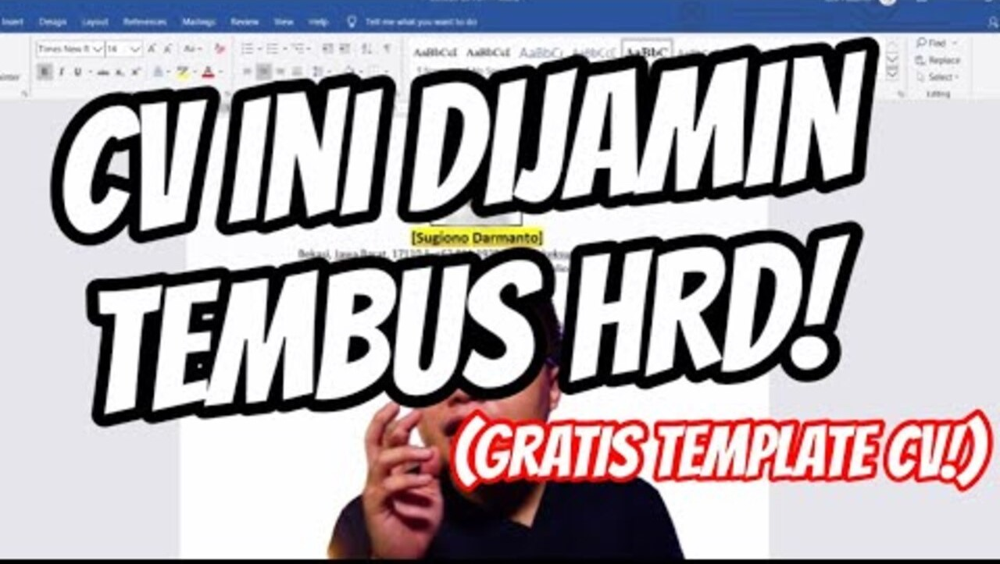
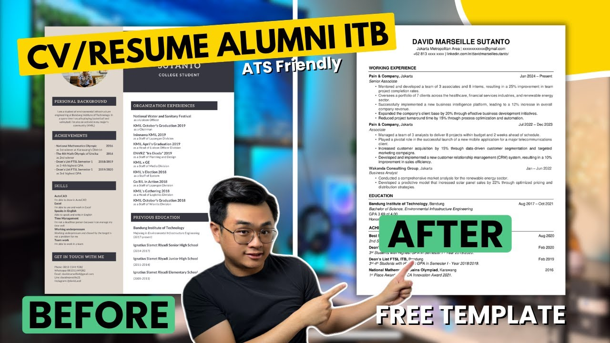

Daftar Topik Video Terkait CV

Cara Membuat CV Yang Baik Cuma 10 Menit (FREE TEMPLATE!)
Cara membuat CV bagi pemula.
Lihat Video

CV/Resume ATS Friendly 2024 (Free Template Word) | dijamin lolos ke tahap interview
Mempelajari cara membuat CV.
Lihat Video